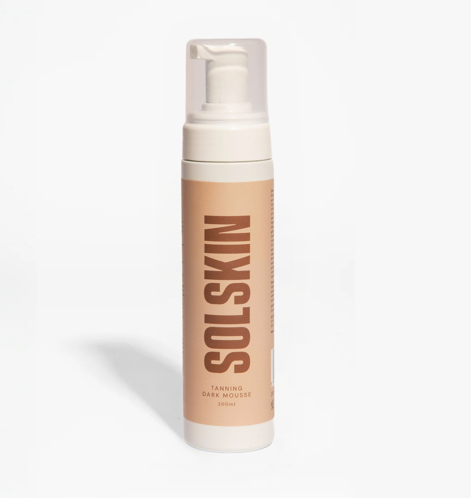
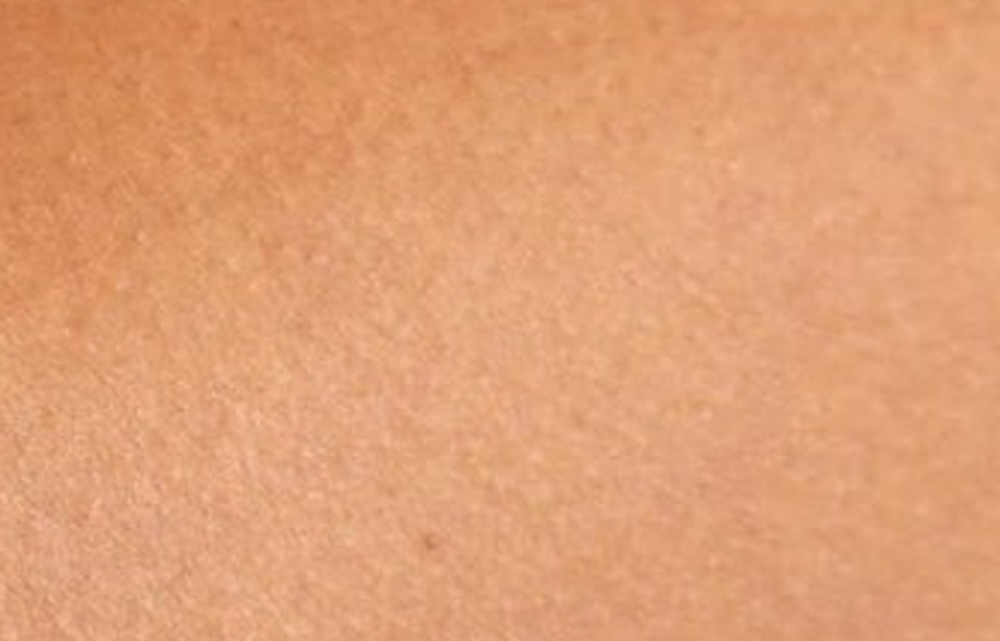
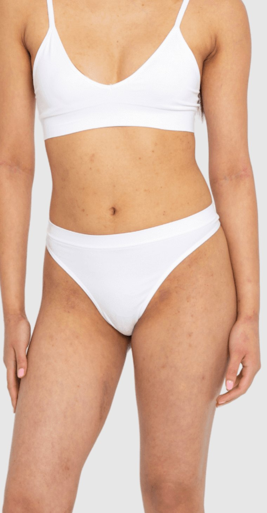
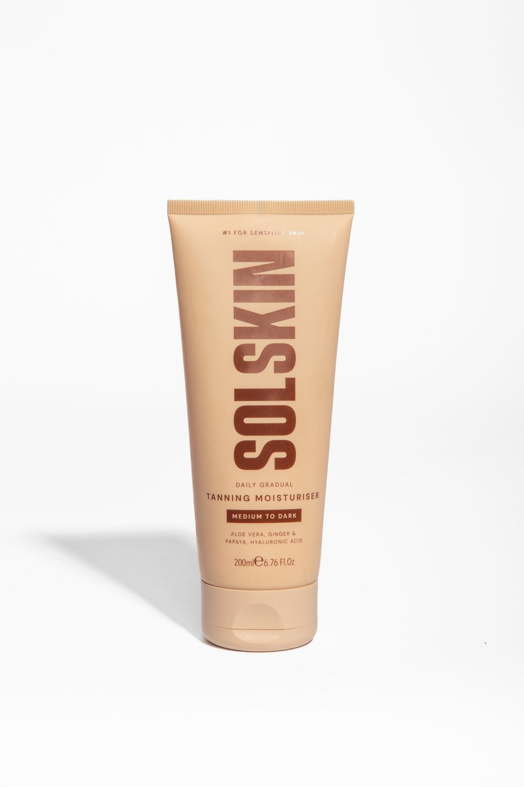
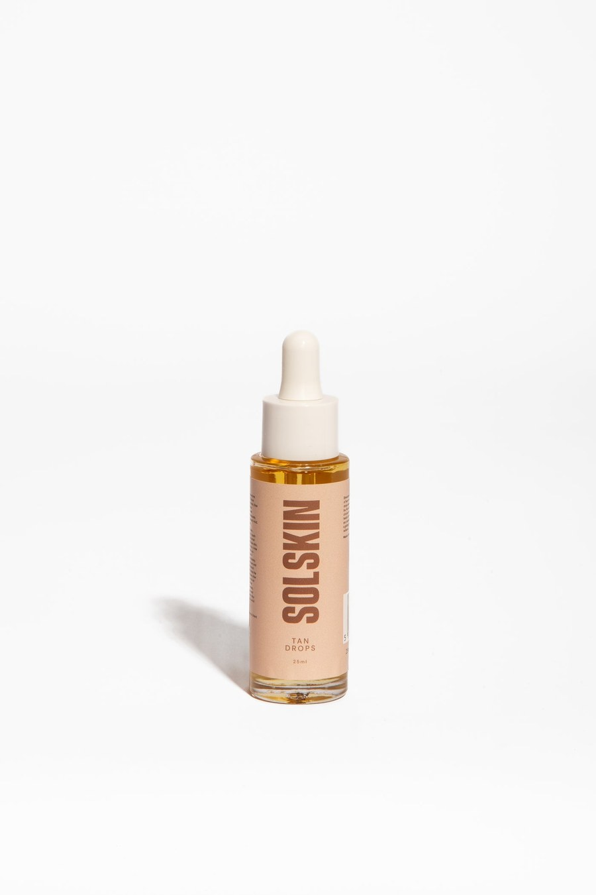
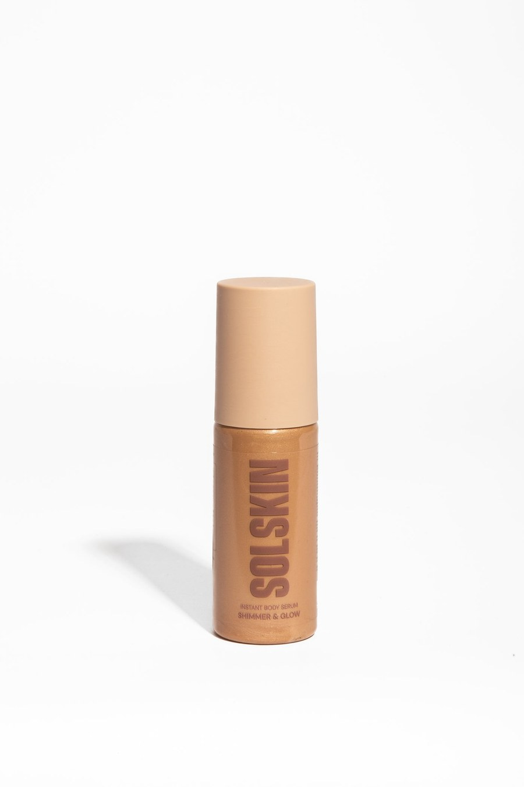
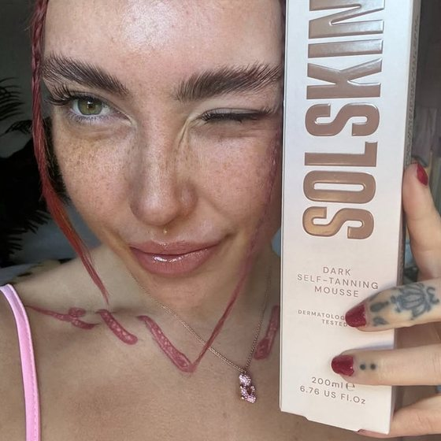
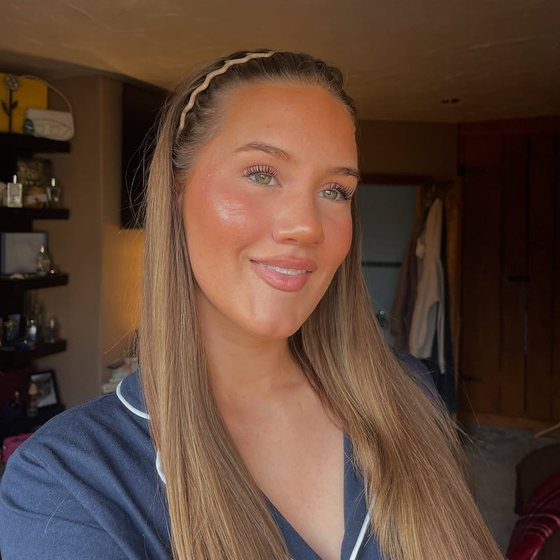
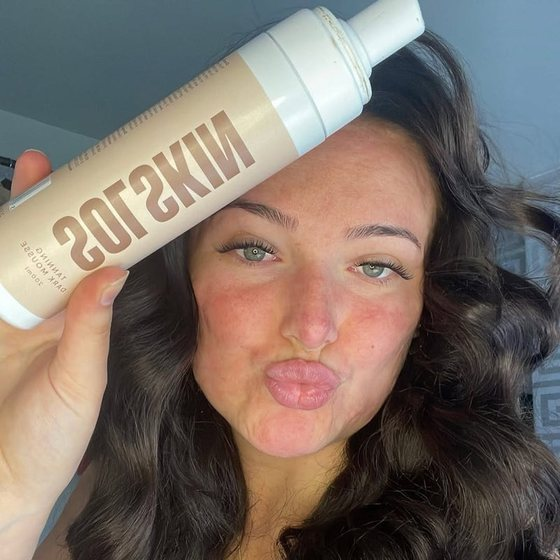

Tan Mousse
Dark · Very Dark · 200mlYour fast-pass to a deep bronze in one application. Develops in 6–8 hours.
£21.99Add to bag
Vegan · Cruelty-free · Dermatologically tested · Made in Britain
If self-tan usually leaves your skin tight, itchy or blotchy, you've probably given up on it. Fair enough. We made one for skin like yours — no streaks, no orange, no drama.

Drag to spin About £0.95 per full-body tanThe bit nobody admits
Three half-used bottles under the sink.
You didn't stop tanning because you stopped wanting to glow. You stopped because the last one stung. And the one before that went patchy round your ankles by day two.
Most self-tan is formulated for skin that never reacts to anything. If yours does — dry, sensitive, easily irritated — you've been buying products that were never really designed with you in mind.
Alcohol-heavy formulas that leave skin tight and itchy an hour after you've applied them.
Dry areas grab colour and hold it. Knees, elbows and ankles give the whole thing away.
A shade that looked fine in the bottle and nothing like skin on you.
That unmistakable biscuit note, arriving about four hours in, wherever you happen to be.

Aloe vera, papaya, ginger and hyaluronic acid. Free from parabens and sulfates.
It develops while you sleep. Hydrating ingredients keep the colour sitting flat, so it fades evenly instead of patchy.
Streak-free, transfer-free, and nothing on your skin that it has to recover from.
Real results
Same model, same light, same camera. We don't retouch the spots, the marks or the texture out — because the point isn't perfect skin, it's your skin with a glow on it.

No skin retouching or filters applied
Our story
“Self-tan wasn't made for skin like ours. We were over it.”
Kaci and Grace kept buying tan, kept reacting to it, and kept giving up. So they spent two years working with formulators in Britain on one that behaved like skincare — and made it for everyone else who'd quietly given up too.
Kaci & Grace, founders
Lives with eczema. Spent years avoiding tan altogether because everything she tried left her skin angry.
Acne-prone skin, and the same story — patchy fades, odd textures, and formulas that clearly weren't built for her.
We're building something for real skin — dry, sensitive, acne-prone, textured, scarred, freckled, melanin-rich, melanin-fair. Tanning isn't about hiding. It's about glowing your way.
Why it works
Made in the UK, dermatologically tested, and built on ingredients chosen to be gentle first and bronzing second.
Soothes and hydrates. The reason the formula suits skin that usually objects.
Holds moisture in, so colour sits flat and fades evenly rather than in patches.
Gently brightens and evens tone, with antioxidants to nourish as the tan develops.
A calming pairing that helps keep the formula comfortable on sensitive skin.
The range
Start gradual if you're nervous, go mousse if you want it tonight. Not sure? The shade quiz takes a minute.
Your fast-pass to a deep bronze in one application. Develops in 6–8 hours.

Build it slowly, day by day. The safest place to start if tan has burned you before.

Mix into your own moisturiser and control exactly how deep it goes.

For tonight. A wash-off glow that layers over your tan or stands on its own.
The honest comparison
| Feature | SOLSKIN | Most tans |
|---|---|---|
| Formulated with sensitive skin in mind | ✓ | — |
| Looks natural, never fake | ✓ | — |
| Hydrates like skincare | ✓ | — |
| Dermatologically tested | ✓ | — |
| Buildable, even, customisable | ✓ | — |
| No biscuit smell | ✓ | — |
| Transfer-free | ✓ | — |
Two things worth knowing
Across the UK and Ireland. Want to see the shade in person before you commit? Check which stores stock us before you travel.
Find your nearest BootsA 200ml bottle is about 25 full-body applications. Set the rhythm that suits you, save 10% on every delivery, and skip or cancel whenever you like.
Set up a subscriptionThe SOLSQUAD
Dry, sensitive, acne-prone, textured, scarred, freckled, melanin-rich, melanin-fair — and everything in between.



60 seconds, no email required
Tell us how your skin behaves and how deep you want to go. We'll point you at one product — not the whole shelf.
Before you ask
Our formulas are dermatologically tested, made without parabens or sulfates, and built around soothing ingredients like aloe vera and hyaluronic acid. That's why people with sensitive and reactive skin get on with them. We'd always suggest patch-testing first, and if it isn't right for you, the 30-day money-back guarantee covers it.
The shades are built to read as skin, not as tan. If you're nervous, start with the Gradual Tanning Moisturiser — you build the depth over a few days and stop wherever you like.
Exfoliate first, moisturise the dry bits — elbows, knees, ankles — then apply with a mitt or brush in circular motions. That's most of it. The formula is fast-drying and transfer-free, so it won't end up on your sheets.
A 200ml bottle gives roughly 25 full-body applications — about £0.95 a tan.
Standard delivery is 2–4 business days, express is 1–2 (order Monday to Friday before 3pm). Free UK delivery over £45. You'll get tracking by email once it ships.